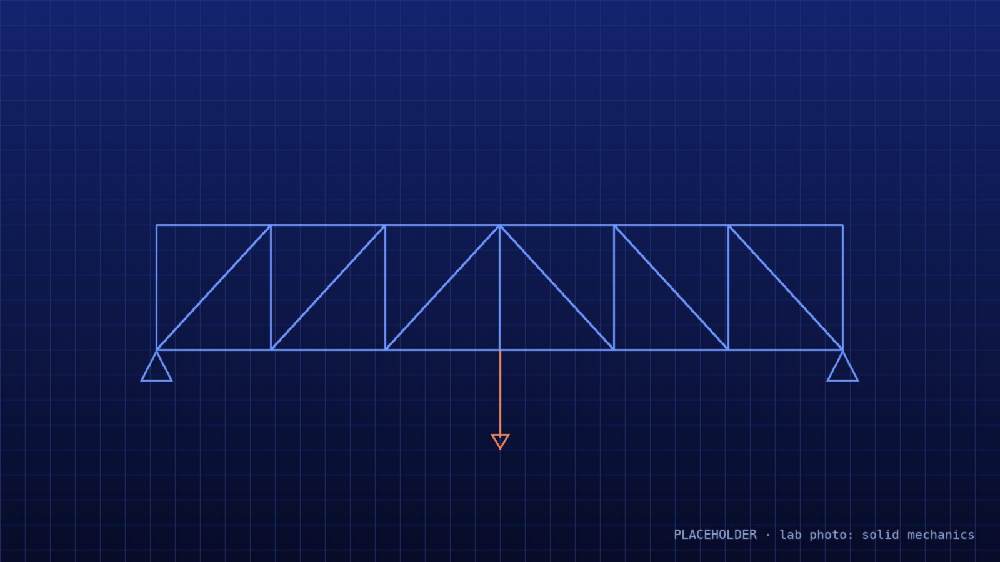
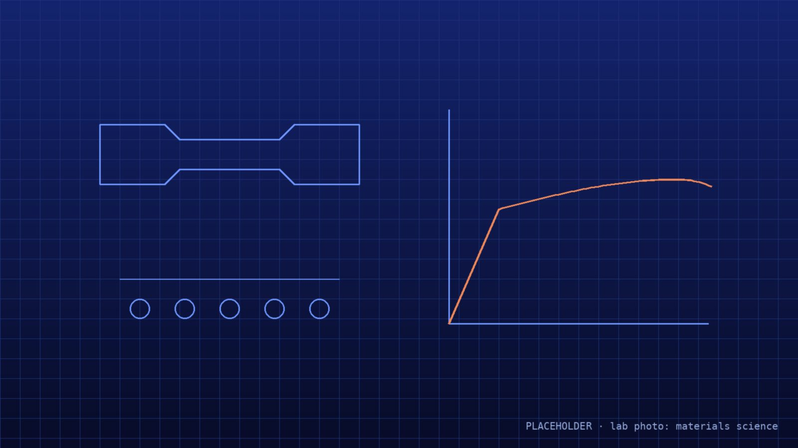
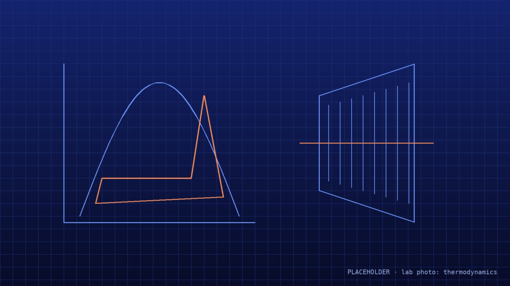
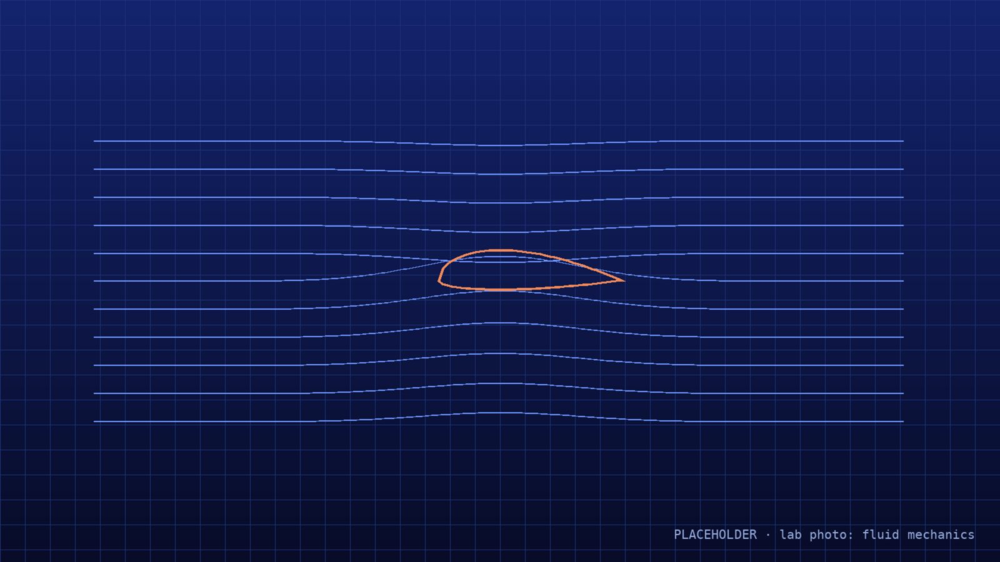
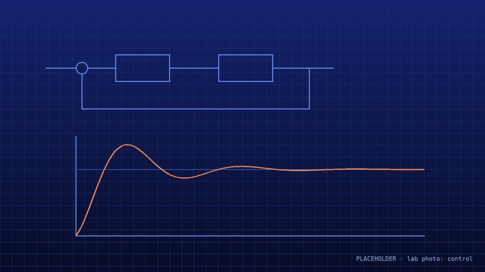
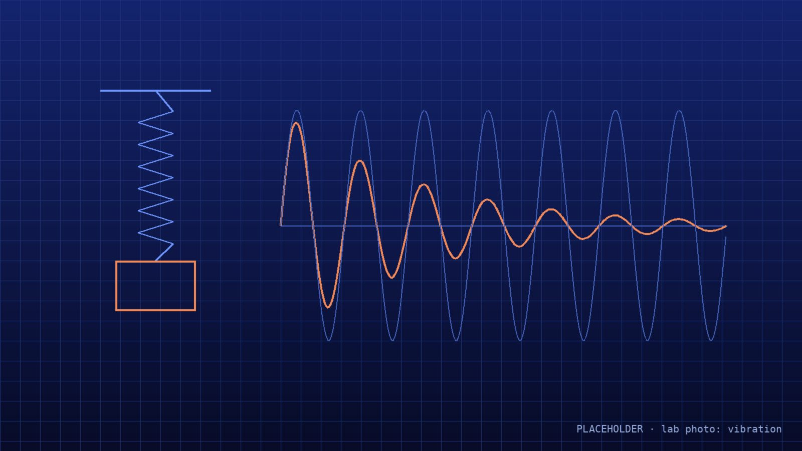
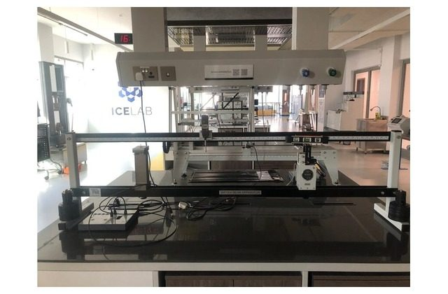
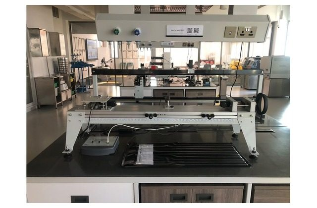
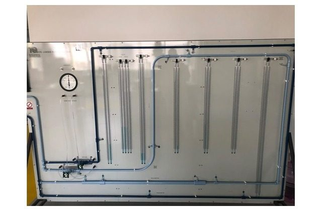
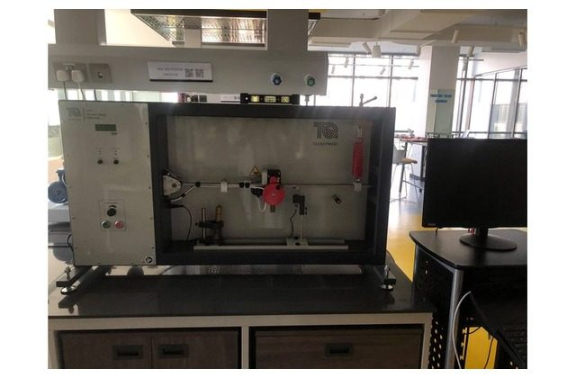

<!doctype html>
<html lang="en">
<head>
<meta charset="utf-8">
<meta name="description" content="ICE Lab, American University of Bahrain: equipment catalog, lab booking, 30 virtual benches with data analysis and calibration, and the Manufacturing Lab with its own machine simulations.">
<meta name="theme-color" content="#050A1A">
<link rel="icon" type="image/png" href="img/ice-mark.png">
<meta property="og:title" content="ICE Lab · American University of Bahrain">
<meta property="og:description" content="Book lab equipment, run the virtual benches and analyse your data.">
<meta property="og:image" content="img/ice-mark.png">
<meta name="viewport" content="width=device-width, initial-scale=1">
<title>ICE Lab — Home</title>
<script src="./support.js"></script>
</head>
<body>
<div id="dc-root"></div>
<script type="text/x-dc-tpl">
<helmet>
<link rel="stylesheet" href="https://fonts.googleapis.com/css2?family=IBM+Plex+Mono:wght@400;500&amp;family=IBM+Plex+Sans:wght@400;500;600&amp;family=Montserrat:wght@300;500;700;800&amp;display=swap">
<style>
body{margin:0;background:#050A1A}
a{color:#8FB3FF}a:hover{color:#C3D5FF}
@keyframes introMark{0%{opacity:0;transform:scale(.55) rotate(-60deg);filter:blur(10px)}55%{opacity:1;filter:blur(0)}100%{opacity:1;transform:scale(1) rotate(0)}}
@keyframes introWipe{0%{clip-path:inset(0 100% 0 0)}100%{clip-path:inset(0 0 0 0)}}
@keyframes introFade{0%{opacity:0;transform:translateY(12px)}100%{opacity:1;transform:none}}
@keyframes introLine{0%{transform:scaleX(0)}100%{transform:scaleX(1)}}
@keyframes introOut{0%{transform:translateY(0)}100%{transform:translateY(-100%);visibility:hidden}}
@keyframes rise{0%{opacity:0;transform:translateY(24px)}100%{opacity:1;transform:none}}
@keyframes spin{to{transform:rotate(360deg)}}
@keyframes spinBack{to{transform:rotate(-360deg)}}
@keyframes float{0%,100%{transform:translateY(0)}50%{transform:translateY(-14px)}}
@keyframes pulse{0%,100%{opacity:.35}50%{opacity:1}}
@keyframes scan{0%{transform:translateY(-120%)}100%{transform:translateY(120%)}}
@keyframes draw{from{stroke-dashoffset:600}to{stroke-dashoffset:0}}
@keyframes heroSlide{0%{opacity:0;transform:scale(1.04) translate(0,0)}4%{opacity:1}17%{opacity:1}21%{opacity:0;transform:scale(1.16) translate(-2%,-1.5%)}100%{opacity:0;transform:scale(1.16) translate(-2%,-1.5%)}}
.sec-slider{scrollbar-width:thin;scrollbar-color:#22356F transparent;cursor:grab}
.sec-slider.dragging{cursor:grabbing;scroll-snap-type:none!important;scroll-behavior:auto!important}
.sec-slider.dragging *{user-select:none}
.sec-slider::-webkit-scrollbar{height:6px}.sec-slider::-webkit-scrollbar-thumb{background:#22356F;border-radius:6px}
@media (prefers-reduced-motion: reduce){.sec-slider{scroll-behavior:auto!important}}
.sim-feat{transition:border-color .2s ease,transform .2s ease}.sim-feat:hover{border-color:#2C4699;transform:translateY(-1px)}
@keyframes panelIn{0%{opacity:0;transform:translateY(16px) scale(.98)}100%{opacity:1;transform:none}}
@keyframes hexGlow{0%,100%{filter:drop-shadow(0 0 10px rgba(42,107,255,.45))}50%{filter:drop-shadow(0 0 24px rgba(42,107,255,.85))}}
@keyframes hexOut{0%{opacity:0;transform:translate(-50%,-50%) translate(var(--dx),var(--dy)) scale(.62)}12%{opacity:1;transform:translate(-50%,-50%) translate(var(--dx),var(--dy)) scale(.62)}45%{opacity:1;transform:translate(-50%,-50%) translate(var(--dx),var(--dy)) scale(.62)}100%{opacity:1;transform:translate(-50%,-50%) scale(1)}}
@keyframes coreIn{0%{opacity:0;transform:translate(-50%,-50%) scale(.6)}100%{opacity:1;transform:translate(-50%,-50%) scale(1)}}
@keyframes labelIn{0%{opacity:0;transform:translateY(6px)}100%{opacity:1;transform:none}}
@keyframes linkIn{0%{opacity:0}100%{opacity:1}}
@keyframes hiveFloat{0%,100%{transform:translate(0,0)}50%{transform:translate(0,-9px)}}
@keyframes hiveSheen{0%,70%,100%{opacity:0}35%{opacity:.55}}
.hive{position:absolute;width:132px;height:152px;transform:translate(-50%,-50%);animation:hexOut 2.4s cubic-bezier(.65,0,.25,1) both;z-index:2}
.hive-float{width:100%;height:100%;animation:hiveFloat 6s ease-in-out infinite;filter:drop-shadow(0 10px 22px rgba(30,91,255,.45))}
.hive-cell{position:relative;width:100%;height:100%;clip-path:polygon(50% 0,100% 25%,100% 75%,50% 100%,0 75%,0 25%);background:linear-gradient(90deg,#2E74FF,#0B33C9)}
.hive-cell::after{content:"";position:absolute;inset:0;background:linear-gradient(160deg,rgba(255,255,255,.5),rgba(255,255,255,0) 55%);opacity:0;animation:hiveSheen 7s ease-in-out infinite;animation-delay:inherit}
.hive-inner{position:absolute;inset:0;display:flex;flex-direction:column;align-items:center;justify-content:center;gap:7px;padding:0 16px;text-align:center;animation:labelIn .6s ease both}
.hive-name{font-family:'Montserrat',sans-serif;font-weight:700;font-size:13px;line-height:1.15;letter-spacing:.01em;color:#FFFFFF}
.hive-core{position:absolute;left:50%;top:50%;width:30%;transform:translate(-50%,-50%);animation:coreIn .7s cubic-bezier(.2,.8,.2,1) both;z-index:3}
.hive-links{position:absolute;inset:0;width:100%;height:100%;z-index:1;animation:linkIn 1s ease both}
.ice-hex{transition:transform .25s ease}
.ice-hex:hover{transform:scale(1.06);z-index:2}
.ice-hex.is-active{z-index:3;animation:hexGlow 2.6s ease-in-out infinite}
.ice-row{transition:border-color .2s ease,background-color .2s ease}
.ice-row:hover{border-color:#3A6BFF;background-color:rgba(30,91,255,.12)}
.hero-slide{position:absolute;inset:0;width:100%;height:100%;object-fit:cover;opacity:0;animation:heroSlide 36s linear infinite;will-change:transform,opacity}
.ice-tile{transition:transform .25s ease,border-color .25s ease,background-color .25s ease}
.ice-tile:hover{transform:translateY(-4px);border-color:#3A6BFF;background-color:#0E1A40}
.ice-path{transition:transform .25s ease,border-color .25s ease}
.ice-path:hover{transform:translateY(-6px);border-color:#5B8CFF}
.ice-path:hover .ice-arrow{transform:translateX(6px)}
.ice-arrow{transition:transform .25s ease}
input[type=range]{accent-color:#3A7BFF}
@media (prefers-reduced-motion: reduce){*,*::before,*::after{animation:none!important;transition:none!important}.ice-intro{display:none!important}}
</style>
</helmet>
<div style="font-family: 'IBM Plex Sans', system-ui, sans-serif; color: #E8ECF8; background: #050A1A; min-height: 100vh; position: relative; overflow: hidden">

<div aria-hidden="true" style="position: fixed; inset: 0; z-index: 0; pointer-events: none">






<div style="position: absolute; inset: 0; background: rgba(5,10,26,.78)"></div>
<div style="position: absolute; inset: 0; background: radial-gradient(ellipse at 50% 40%, rgba(5,10,26,0) 0%, rgba(5,10,26,.6) 100%)"></div>
</div>
<sc-if value="{{showIntro}}" hint-placeholder-val="{{false}}">
<div class="ice-intro" aria-hidden="true" style="position: fixed; inset: 0; z-index: 50; background: radial-gradient(circle at 50% 40%, #0F2A7A 0%, #050A1A 55%); display: flex; flex-direction: column; align-items: center; justify-content: center; gap: 28px; animation: introOut .9s cubic-bezier(.7,0,.2,1) 3.4s forwards">


<div style="width: 220px; height: 1px; background: #22356F; transform-origin: center; animation: introLine .6s ease 1.8s both"></div>
<div style="display: flex; align-items: center; gap: 12px; animation: introFade .6s ease 2.1s both">
<span style="display: inline-flex; align-items: center; padding: 8px 14px; border-radius: 10px; background: #FFFFFF"></span>
</div>
</div>
</sc-if>

<svg aria-hidden="true" width="100%" height="100%" style="position: absolute; inset: 0; pointer-events: none; opacity: .5">
<defs>
<pattern id="hexgrid" width="56" height="97" patternUnits="userSpaceOnUse" patternTransform="scale(1)">
<path d="M28 0 L56 16 L56 48 L28 64 L0 48 L0 16 Z M28 64 L28 97" fill="none" stroke="#14214A" stroke-width="1"></path>
</pattern>
<radialGradient id="glow" cx="72%" cy="14%" r="40%">
<stop offset="0" stop-color="#1E5BFF" stop-opacity=".35"></stop>
<stop offset="1" stop-color="#1E5BFF" stop-opacity="0"></stop>
</radialGradient>
</defs>
<rect width="100%" height="100%" fill="url(#hexgrid)"></rect>
<rect width="100%" height="100%" fill="url(#glow)"></rect>
</svg>

<header style="position: sticky; top: 0; z-index: 10; background: rgba(5,10,26,.82); backdrop-filter: blur(10px); border-bottom: 1px solid #16224A">
<div style="max-width: 1280px; margin: 0 auto; padding: 12px 32px; display: flex; flex-wrap: wrap; align-items: center; gap: 12px 28px">
<a href="Home.dc.html" style="display: flex; align-items: center; gap: 12px; text-decoration: none" aria-label="ICE Lab home">


</a>
<nav aria-label="Main" style="display: flex; flex-wrap: wrap; gap: 4px; flex: 1 1 auto; justify-content: flex-end">
<a href="#about" style="color: #B7C2E2; text-decoration: none; padding: 10px 14px; font-size: 15px">About</a>
<a href="#inside" style="color: #B7C2E2; text-decoration: none; padding: 10px 14px; font-size: 15px">What’s inside</a>
<a href="Main.dc.html" style="color: #B7C2E2; text-decoration: none; padding: 10px 14px; font-size: 15px">Equipment</a>
<a href="SimHub.dc.html" style="color: #B7C2E2; text-decoration: none; padding: 10px 14px; font-size: 15px">Simulation</a>
<a href="Manufacturing.dc.html" style="color: #B7C2E2; text-decoration: none; padding: 10px 14px; font-size: 15px">Manufacturing</a>
<a href="Booking.dc.html" style="color: #B7C2E2; text-decoration: none; padding: 10px 14px; font-size: 15px">Book</a>
</nav>
<a href="Booking.dc.html" style="display: inline-flex; align-items: center; height: 42px; padding: 0 18px; border-radius: 6px; border: 1px solid #2C4699; color: #FFFFFF; text-decoration: none; font-size: 15px; font-weight: 500">Sign in</a>
</div>
</header>

<main style="position: relative; z-index: 1">

<div style="position: relative; overflow: hidden; border-bottom: 1px solid #16224A">
<section id="top" style="position: relative; z-index: 1; max-width: 1280px; margin: 0 auto; padding: 88px 32px 72px; display: flex; flex-wrap: wrap; align-items: center; gap: 48px">
<div style="flex: 0 1 760px; min-width: 0; display: flex; flex-direction: column; gap: 22px">
<p style="margin: 0; font-family: 'IBM Plex Mono', monospace; font-size: 13px; letter-spacing: .14em; text-transform: uppercase; color: #6E95FF; animation: rise .7s ease 3.5s both">American University of Bahrain · ICE Lab</p>
<h1 style="margin: 0; font-family: 'Montserrat', sans-serif; font-weight: 800; font-size: 60px; line-height: 1.05; letter-spacing: -.02em; text-wrap: balance; animation: rise .8s ease 3.65s both">Test it. Measure it. <span style="font-weight: 300; color: #7FA4FF">Make it.</span></h1>
<p style="margin: 0; font-size: 19px; line-height: 1.6; color: #AEB9DA; max-width: 600px; animation: rise .8s ease 3.8s both">ICE Lab brings the American University of Bahrain’s engineering laboratories together under one roof, serving Industrial, Civil and Mechanical Engineering. Six test sections and a Manufacturing Lab, 43 machines and rigs: learn the theory, rehearse it on a virtual bench, then book the real rig and measure it.</p>
<div style="display: flex; flex-wrap: wrap; gap: 12px; animation: rise .8s ease 3.95s both">
<a href="Booking.dc.html" style="display: inline-flex; align-items: center; gap: 10px; height: 52px; padding: 0 24px; border-radius: 8px; background: linear-gradient(135deg, #2A6BFF, #0B33C9); color: #FFFFFF; text-decoration: none; font-weight: 600; font-size: 16px; box-shadow: 0 8px 30px rgba(30,91,255,.35)">Book equipment</a>
<a href="SimHub.dc.html" style="display: inline-flex; align-items: center; gap: 10px; height: 52px; padding: 0 24px; border-radius: 8px; border: 1px solid #2C4699; color: #FFFFFF; text-decoration: none; font-weight: 500; font-size: 16px">Try a simulation</a>
</div>
<dl style="margin: 12px 0 0; display: grid; grid-template-columns: repeat(auto-fit, minmax(130px, 1fr)); gap: 18px; border-top: 1px solid #1A2752; padding-top: 22px; animation: rise .8s ease 4.1s both">
<div><dt style="font-family: 'IBM Plex Mono', monospace; font-size: 12px; letter-spacing: .08em; text-transform: uppercase; color: #7E8BB3">Apparatus</dt><dd style="margin: 4px 0 0; font-family: 'Montserrat', sans-serif; font-weight: 700; font-size: 34px">43</dd></div>
<div><dt style="font-family: 'IBM Plex Mono', monospace; font-size: 12px; letter-spacing: .08em; text-transform: uppercase; color: #7E8BB3">Test sections</dt><dd style="margin: 4px 0 0; font-family: 'Montserrat', sans-serif; font-weight: 700; font-size: 34px">6</dd></div>
<div><dt style="font-family: 'IBM Plex Mono', monospace; font-size: 12px; letter-spacing: .08em; text-transform: uppercase; color: #7E8BB3">Virtual benches</dt><dd style="margin: 4px 0 0; font-family: 'Montserrat', sans-serif; font-weight: 700; font-size: 34px">30</dd></div>
<div><dt style="font-family: 'IBM Plex Mono', monospace; font-size: 12px; letter-spacing: .08em; text-transform: uppercase; color: #7E8BB3">Classrooms</dt><dd style="margin: 4px 0 0; font-family: 'Montserrat', sans-serif; font-weight: 700; font-size: 34px">2</dd></div>
</dl>
</div>

</section>
</div>

<section id="about" aria-labelledby="about-h" style="max-width: 1280px; margin: 0 auto; padding: 96px 32px 24px; display: flex; flex-direction: column; gap: 40px">
<div style="display: flex; flex-wrap: wrap; gap: 32px 64px; align-items: flex-start">
<div style="flex: 1 1 380px; min-width: 0; display: flex; flex-direction: column; gap: 12px">
<p style="margin: 0; font-family: 'IBM Plex Mono', monospace; font-size: 13px; letter-spacing: .14em; text-transform: uppercase; color: #6E95FF">About the lab</p>
<h2 id="about-h" style="margin: 0; font-family: 'Montserrat', sans-serif; font-weight: 700; font-size: 40px; line-height: 1.12; letter-spacing: -.01em; text-wrap: balance">Where engineering theory meets measured data</h2>
</div>
<div style="flex: 1.3 1 480px; min-width: 0; display: flex; flex-direction: column; gap: 16px; font-size: 17px; line-height: 1.7; color: #AEB9DA">
<p style="margin: 0">ICE Lab is not a single room but a group of laboratories working side by side: Solid Mechanics, Materials Science, Thermodynamics, Fluid Mechanics, Control and Vibration. Together they hold 32 pieces of teaching and research apparatus, and the Manufacturing Lab next door adds 11 manual and CNC machines for making parts. The labs serve three programmes at the American University of Bahrain: Industrial, Civil and Mechanical Engineering.</p>
<p style="margin: 0">In the lab, the equations from lectures are tested against real measurements. Students load a specimen until it fails, measure how beams, trusses and struts carry load, run a turbojet and a steam turbine, study open-channel and pipe flow, find the natural frequency of a beam and automate a live process with a PLC. Along the way they learn to plan an experiment, record clean data, judge its uncertainty and report the result as practising engineers do.</p>
</div>
</div>
<div style="display: flex; flex-direction: column; gap: 14px">
<p style="margin: 0; font-family: 'IBM Plex Mono', monospace; font-size: 12px; letter-spacing: .1em; text-transform: uppercase; color: #8E9AC0">Three programmes, one lab</p>
<div style="display: grid; grid-template-columns: repeat(auto-fit, minmax(260px, 1fr)); gap: 16px">
<article style="display: flex; flex-direction: column; gap: 10px; padding: 26px; border-radius: 12px; border: 1px solid #2C4699; background: linear-gradient(160deg, rgba(42,107,255,.22), rgba(11,51,201,.06))">
<h3 style="margin: 0; font-family: 'Montserrat', sans-serif; font-weight: 700; font-size: 22px">Mechanical Engineering</h3>
<p style="margin: 0; font-size: 15px; line-height: 1.6; color: #AEB9DA">Thermodynamics, fluid mechanics, vibration and solid mechanics: engines, turbines, heat exchangers, pumps, the wind tunnel and rotor dynamics.</p>
</article>
<article style="display: flex; flex-direction: column; gap: 10px; padding: 26px; border-radius: 12px; border: 1px solid #2C4699; background: linear-gradient(160deg, rgba(42,107,255,.22), rgba(11,51,201,.06))">
<h3 style="margin: 0; font-family: 'Montserrat', sans-serif; font-weight: 700; font-size: 22px">Civil Engineering</h3>
<p style="margin: 0; font-size: 15px; line-height: 1.6; color: #AEB9DA">Materials testing and structures: tension, compression and shear tests, beams, trusses and struts, plus hydraulics in the flow channel and pipe rigs.</p>
</article>
<article style="display: flex; flex-direction: column; gap: 10px; padding: 26px; border-radius: 12px; border: 1px solid #2C4699; background: linear-gradient(160deg, rgba(42,107,255,.22), rgba(11,51,201,.06))">
<h3 style="margin: 0; font-family: 'Montserrat', sans-serif; font-weight: 700; font-size: 22px">Industrial Engineering</h3>
<p style="margin: 0; font-size: 15px; line-height: 1.6; color: #AEB9DA">Materials science, measurement and control: hardness, impact and fatigue testing, PLC automation and process trainers.</p>
</article>
</div>
</div>
<div style="display: grid; grid-template-columns: repeat(auto-fit, minmax(260px, 1fr)); gap: 16px">
<article style="display: flex; flex-direction: column; gap: 10px; padding: 26px; border-radius: 12px; border: 1px solid #1D2C5E; background: linear-gradient(180deg, #0B1636, #08112B)">
<span style="font-family: 'IBM Plex Mono', monospace; font-size: 12px; letter-spacing: .1em; color: #6E95FF">01</span>
<h3 style="margin: 0; font-family: 'Montserrat', sans-serif; font-weight: 700; font-size: 20px">Teaching</h3>
<p style="margin: 0; font-size: 15px; line-height: 1.6; color: #AEB9DA">Laboratory sessions for engineering courses run on industry-standard apparatus from TecQuipment, MTS and Matrix, so every group works on the same rigs used at universities worldwide.</p>
</article>
<article style="display: flex; flex-direction: column; gap: 10px; padding: 26px; border-radius: 12px; border: 1px solid #1D2C5E; background: linear-gradient(180deg, #0B1636, #08112B)">
<span style="font-family: 'IBM Plex Mono', monospace; font-size: 12px; letter-spacing: .1em; color: #6E95FF">02</span>
<h3 style="margin: 0; font-family: 'Montserrat', sans-serif; font-weight: 700; font-size: 20px">Projects &amp; research</h3>
<p style="margin: 0; font-size: 15px; line-height: 1.6; color: #AEB9DA">Faculty, senior-design teams and research students can reserve rigs for longer studies, use the lab’s two classrooms, or borrow portable equipment with a supervisor’s approval.</p>
</article>
<article style="display: flex; flex-direction: column; gap: 10px; padding: 26px; border-radius: 12px; border: 1px solid #1D2C5E; background: linear-gradient(180deg, #0B1636, #08112B)">
<span style="font-family: 'IBM Plex Mono', monospace; font-size: 12px; letter-spacing: .1em; color: #6E95FF">03</span>
<h3 style="margin: 0; font-family: 'Montserrat', sans-serif; font-weight: 700; font-size: 20px">Virtual benches</h3>
<p style="margin: 0; font-size: 15px; line-height: 1.6; color: #AEB9DA">30 of the rigs have a simulation that mirrors the real apparatus. Students rehearse the procedure and check their analysis before they spend time on the real machine.</p>
</article>
</div>
</section>

<section aria-labelledby="paths-h" style="max-width: 1280px; margin: 0 auto; padding: 72px 32px 96px; display: flex; flex-direction: column; gap: 28px">
<div style="display: flex; flex-direction: column; gap: 8px">
<p style="margin: 0; font-family: 'IBM Plex Mono', monospace; font-size: 13px; letter-spacing: .14em; text-transform: uppercase; color: #6E95FF">Start here</p>
<h2 id="paths-h" style="margin: 0; font-family: 'Montserrat', sans-serif; font-weight: 700; font-size: 38px; letter-spacing: -.01em">What do you want to do?</h2>
</div>
<div style="display: grid; grid-template-columns: repeat(auto-fit, minmax(300px, 1fr)); gap: 20px">

<a href="Booking.dc.html" class="ice-path" style="position: relative; overflow: hidden; display: flex; flex-direction: column; gap: 16px; padding: 28px; border-radius: 14px; border: 1px solid #22356F; background: linear-gradient(160deg, #10204F, #0A1330 60%); color: #E8ECF8; text-decoration: none; min-height: 300px">
<svg width="44" height="44" viewBox="0 0 24 24" fill="none" stroke="#7FA4FF" stroke-width="1.5" stroke-linecap="round" stroke-linejoin="round" aria-hidden="true"><rect x="3" y="5" width="18" height="16" rx="2"></rect><path d="M3 10h18M8 3v4M16 3v4M8 14h3M8 17h6"></path></svg>
<h3 style="margin: 0; font-family: 'Montserrat', sans-serif; font-weight: 700; font-size: 24px">Book the lab</h3>
<p style="margin: 0; font-size: 16px; line-height: 1.55; color: #AEB9DA">Borrow equipment, use a machine in the lab, or reserve Classroom 1 or 2. Your supervisor approves it online.</p>
<ul style="margin: 0; padding: 0; list-style: none; display: flex; flex-wrap: wrap; gap: 8px; font-family: 'IBM Plex Mono', monospace; font-size: 12px; color: #B7C2E2">
<li style="padding: 4px 10px; border: 1px solid #2C4699; border-radius: 999px">Borrow</li><li style="padding: 4px 10px; border: 1px solid #2C4699; border-radius: 999px">Use in lab</li><li style="padding: 4px 10px; border: 1px solid #2C4699; border-radius: 999px">Classroom</li>
</ul>
<span style="margin-top: auto; display: flex; align-items: center; gap: 8px; font-weight: 600; color: #FFFFFF">Start a booking</span>
</a>

<a href="SimHub.dc.html" class="ice-path" style="position: relative; overflow: hidden; display: flex; flex-direction: column; gap: 16px; padding: 28px; border-radius: 14px; border: 1px solid #22356F; background: linear-gradient(160deg, #10204F, #0A1330 60%); color: #E8ECF8; text-decoration: none; min-height: 300px">
<svg width="44" height="44" viewBox="0 0 24 24" fill="none" stroke="#7FA4FF" stroke-width="1.5" stroke-linecap="round" stroke-linejoin="round" aria-hidden="true"><path d="M3 17c3 0 4-10 9-10s6 10 9 10"></path><path d="M3 21h18M3 3v18"></path><circle cx="12" cy="7" r="1.5"></circle></svg>
<h3 style="margin: 0; font-family: 'Montserrat', sans-serif; font-weight: 700; font-size: 24px">Try a simulation</h3>
<p style="margin: 0; font-size: 16px; line-height: 1.55; color: #AEB9DA">Run a virtual version of a lab experiment first. Change the inputs, see the result, then book the real rig.</p>
<ul style="margin: 0; padding: 0; list-style: none; display: flex; flex-wrap: wrap; gap: 8px; font-family: 'IBM Plex Mono', monospace; font-size: 12px; color: #B7C2E2">
<li style="padding: 4px 10px; border: 1px solid #2C4699; border-radius: 999px">Beam deflection</li><li style="padding: 4px 10px; border: 1px solid #2C4699; border-radius: 999px">Buckling</li><li style="padding: 4px 10px; border: 1px solid #2C4699; border-radius: 999px">Vibration</li>
</ul>
<span style="margin-top: auto; display: flex; align-items: center; gap: 8px; font-weight: 600; color: #FFFFFF">Open simulations</span>
</a>

<a href="Main.dc.html" class="ice-path" style="position: relative; overflow: hidden; display: flex; flex-direction: column; gap: 16px; padding: 28px; border-radius: 14px; border: 1px solid #22356F; background: linear-gradient(160deg, #10204F, #0A1330 60%); color: #E8ECF8; text-decoration: none; min-height: 300px">
<svg width="44" height="44" viewBox="0 0 24 24" fill="none" stroke="#7FA4FF" stroke-width="1.5" stroke-linecap="round" stroke-linejoin="round" aria-hidden="true"><path d="M12 2l8.5 5v10L12 22l-8.5-5V7z"></path><path d="M12 22V12M20.5 7L12 12 3.5 7"></path></svg>
<h3 style="margin: 0; font-family: 'Montserrat', sans-serif; font-weight: 700; font-size: 24px">Explore equipment</h3>
<p style="margin: 0; font-size: 16px; line-height: 1.55; color: #AEB9DA">See every machine and rig, what it’s used for, its accessories and whether it’s available today.</p>
<ul style="margin: 0; padding: 0; list-style: none; display: flex; flex-wrap: wrap; gap: 8px; font-family: 'IBM Plex Mono', monospace; font-size: 12px; color: #B7C2E2">
<li style="padding: 4px 10px; border: 1px solid #2C4699; border-radius: 999px">43 machines and rigs</li><li style="padding: 4px 10px; border: 1px solid #2C4699; border-radius: 999px">6 sections</li>
</ul>
<span style="margin-top: auto; display: flex; align-items: center; gap: 8px; font-weight: 600; color: #FFFFFF">Browse the catalog</span>
</a>

</div>
</section>

<section id="inside" aria-labelledby="inside-h" style="border-top: 1px solid #16224A; border-bottom: 1px solid #16224A; background: rgba(8,15,38,.75)">
<div style="max-width: 1280px; margin: 0 auto; padding: 96px 32px; display: flex; flex-direction: column; gap: 40px">
<div style="display: flex; flex-wrap: wrap; justify-content: space-between; align-items: flex-end; gap: 16px">
<div style="display: flex; flex-direction: column; gap: 8px; max-width: 680px">
<p style="margin: 0; font-family: 'IBM Plex Mono', monospace; font-size: 13px; letter-spacing: .14em; text-transform: uppercase; color: #6E95FF">What’s inside</p>
<h2 id="inside-h" style="margin: 0; font-family: 'Montserrat', sans-serif; font-weight: 700; font-size: 38px; letter-spacing: -.01em">Six test sections, one honeycomb</h2>
<p style="margin: 0; font-size: 17px; line-height: 1.6; color: #AEB9DA">Like the ICE Lab mark, the lab is a honeycomb of six test sections. Pick a cell or slide through the sections, then explore one to see its rigs.</p>
</div>
<a href="Main.dc.html" style="font-weight: 600; text-decoration: none">See the full catalog</a>
</div>

<div style="display: flex; flex-wrap: wrap; gap: 40px; align-items: center; justify-content: center">

<div style="flex: 0 1 340px; margin: 0 auto; min-width: 0; display: flex; flex-direction: column; align-items: center; gap: 16px">
<div role="tablist" aria-label="Lab sections" style="position: relative; width: 100%; max-width: 340px; aspect-ratio: 480 / 450">
<sc-for list="{{sections}}" as="s" hint-placeholder-count="7">
<sc-if value="{{s.active}}" hint-placeholder-val="{{false}}">
<div class="ice-hex is-active" style="position: absolute; left: {{s.left}}; top: {{s.top}}; width: 31.25%; height: 38.44%; clip-path: polygon(50% 0, 100% 25%, 100% 75%, 50% 100%, 0 75%, 0 25%); background: #9DBBFF">
<button type="button" role="tab" aria-selected="true" onClick="{{s.pick}}" style="position: absolute; inset: 2px; clip-path: polygon(50% 0, 100% 25%, 100% 75%, 50% 100%, 0 75%, 0 25%); border: 0; background: linear-gradient(150deg, #2A6BFF, #0B33C9); color: #FFFFFF; font: inherit; cursor: pointer; display: flex; flex-direction: column; align-items: center; justify-content: center; gap: 6px; padding: 0 5%; text-align: center">
<svg width="30" height="30" viewBox="0 0 24 24" fill="none" stroke="#FFFFFF" stroke-width="1.6" stroke-linecap="round" stroke-linejoin="round" aria-hidden="true"><path d="{{s.icon}}"></path></svg>
<span style="font-family: 'Montserrat', sans-serif; font-weight: 700; font-size: 12px; line-height: 1.2; hyphens: manual">{{s.hexName}}</span>
<span style="font-family: 'IBM Plex Mono', monospace; font-size: 11px; color: #DCE6FF">{{s.count}}</span>
</button>
</div>
</sc-if>
<sc-if value="{{s.idle}}" hint-placeholder-val="{{true}}">
<div class="ice-hex" style="position: absolute; left: {{s.left}}; top: {{s.top}}; width: 31.25%; height: 38.44%; clip-path: polygon(50% 0, 100% 25%, 100% 75%, 50% 100%, 0 75%, 0 25%); background: #263C80">
<button type="button" role="tab" aria-selected="false" onClick="{{s.pick}}" style="position: absolute; inset: 1.5px; clip-path: polygon(50% 0, 100% 25%, 100% 75%, 50% 100%, 0 75%, 0 25%); border: 0; background: #0B1636; color: #D3DAEE; font: inherit; cursor: pointer; display: flex; flex-direction: column; align-items: center; justify-content: center; gap: 6px; padding: 0 5%; text-align: center">
<svg width="28" height="28" viewBox="0 0 24 24" fill="none" stroke="#7FA4FF" stroke-width="1.6" stroke-linecap="round" stroke-linejoin="round" aria-hidden="true"><path d="{{s.icon}}"></path></svg>
<span style="font-family: 'Montserrat', sans-serif; font-weight: 600; font-size: 12px; line-height: 1.2; hyphens: manual">{{s.hexName}}</span>
<span style="font-family: 'IBM Plex Mono', monospace; font-size: 11px; color: #8E9AC0">{{s.count}}</span>
</button>
</div>
</sc-if>
</sc-for>
<div aria-hidden="true" style="position: absolute; left: 34.375%; top: 30.78%; width: 31.25%; height: 38.44%; clip-path: polygon(50% 0, 100% 25%, 100% 75%, 50% 100%, 0 75%, 0 25%); background: #16224A">
<div style="position: absolute; inset: 1.5px; clip-path: polygon(50% 0, 100% 25%, 100% 75%, 50% 100%, 0 75%, 0 25%); background: radial-gradient(circle, #10245A, #060C22 75%); display: flex; align-items: center; justify-content: center">

</div>
</div>
</div>
<p style="margin: 0; font-family: 'IBM Plex Mono', monospace; font-size: 12px; color: #7E8BB3">{{totalLabel}}</p>
</div>

<div style="flex: 1 1 560px; min-width: 0; display: flex; flex-direction: column; gap: 14px">
<div id="sec-slider" class="sec-slider" role="tabpanel" aria-label="Lab sections" tabindex="0" style="display: flex; gap: 16px; overflow-x: auto; scroll-snap-type: x mandatory; scroll-behavior: smooth; padding: 4px 2px 14px; overscroll-behavior-x: contain">
<sc-for list="{{sections}}" as="s" hint-placeholder-count="3">
<article id="{{s.cardId}}" style="flex: 0 0 min(330px, 86%); min-height: 270px; scroll-snap-align: start; position: relative; overflow: hidden; display: flex; flex-direction: column; gap: 14px; padding: 22px; border-radius: 14px; border: 1px solid {{s.border}}; background: linear-gradient(160deg, #0F1E4C, #081128 70%); box-shadow: {{s.shadow}}; transition: border-color .3s ease, box-shadow .3s ease">
<svg aria-hidden="true" width="170" height="170" viewBox="0 0 24 24" fill="none" stroke="#1C2E66" stroke-width=".5" stroke-linecap="round" stroke-linejoin="round" style="position: absolute; right: -34px; top: -34px"><path d="{{s.icon}}"></path></svg>
<div style="position: relative; display: flex; align-items: center; gap: 12px">
<span style="width: 42px; height: 48px; clip-path: polygon(50% 0, 100% 25%, 100% 75%, 50% 100%, 0 75%, 0 25%); background: linear-gradient(150deg, #2A6BFF, #0B33C9); display: flex; align-items: center; justify-content: center; flex: 0 0 auto">
<svg width="20" height="20" viewBox="0 0 24 24" fill="none" stroke="#FFFFFF" stroke-width="1.7" stroke-linecap="round" stroke-linejoin="round" aria-hidden="true"><path d="{{s.icon}}"></path></svg>
</span>
<div style="display: flex; flex-direction: column; gap: 1px; flex: 1 1 auto; min-width: 0">
<span style="font-family: 'IBM Plex Mono', monospace; font-size: 11px; letter-spacing: .1em; color: #6E95FF">{{s.code}}</span>
<h3 style="margin: 0; font-family: 'Montserrat', sans-serif; font-weight: 800; font-size: 21px; letter-spacing: -.01em; line-height: 1.15">{{s.name}}</h3>
</div>
<span style="font-family: 'IBM Plex Mono', monospace; font-size: 12px; padding: 4px 10px; border-radius: 999px; border: 1px solid #2C4699; color: #DCE6FF; white-space: nowrap">{{s.count}}</span>
</div>
<p style="position: relative; margin: 0; font-size: 15px; line-height: 1.6; color: #C3CCE6">{{s.what}}</p>
<div style="position: relative; margin-top: auto; padding-top: 4px">
<a href="Section.dc.html#sec={{s.key}}" style="display: flex; align-items: center; justify-content: center; height: 44px; border-radius: 8px; background: linear-gradient(135deg, #2A6BFF, #0B33C9); color: #FFFFFF; text-decoration: none; font-weight: 600; font-size: 15px">Explore</a>
</div>
</article>
</sc-for>
</div>
<div style="display: flex; align-items: center; justify-content: center; gap: 8px" role="tablist" aria-label="Choose a section">
<sc-for list="{{sections}}" as="s" hint-placeholder-count="6">
<button type="button" role="tab" aria-label="{{s.name}}" aria-selected="{{s.activeStr}}" onClick="{{s.pick}}" style="width: {{s.dotW}}; height: 8px; padding: 0; border: 0; border-radius: 999px; background: {{s.dotBg}}; cursor: pointer; transition: width .3s ease, background .3s ease"></button>
</sc-for>
</div>
</div>

</div>
</div>
</section>

<section id="simulation" aria-labelledby="sim-h" style="max-width: 1280px; margin: 0 auto; padding: 96px 32px; display: flex; flex-wrap: wrap; gap: 48px; align-items: center">
<div style="flex: 1 1 380px; min-width: 0; display: flex; flex-direction: column; gap: 18px">
<p style="margin: 0; font-family: 'IBM Plex Mono', monospace; font-size: 13px; letter-spacing: .14em; text-transform: uppercase; color: #6E95FF">Simulation</p>
<h2 id="sim-h" style="margin: 0; font-family: 'Montserrat', sans-serif; font-weight: 700; font-size: 38px; letter-spacing: -.01em">Try it virtually before you book</h2>
<p style="margin: 0; font-size: 17px; line-height: 1.6; color: #AEB9DA">Each of the 30 benches on the Virtual Bench mirrors a real rig in the lab, with live readings, a logbook and the analysis. Predict the result there, then measure it on the apparatus and compare.</p>
<ul style="margin: 0; padding: 0; list-style: none; display: grid; grid-template-columns: repeat(auto-fill, minmax(min(100%, 260px), 1fr)); gap: 10px">
<li><a href="bench.html#beams" class="sim-feat" style="display: flex; gap: 14px; align-items: center; padding: 8px; border-radius: 10px; border: 1px solid #1D2C5E; background: rgba(11,22,54,.7); color: #E8ECF8; text-decoration: none"><span style="display: flex; flex-direction: column; gap: 2px; min-width: 0"><span style="font-family: 'IBM Plex Mono', monospace; font-size: 11.5px; color: #6E95FF">No. 15</span><span style="font-size: 15px; font-weight: 600">Beam deflection</span><span style="font-size: 13px; color: #8E9AC0">Beam Apparatus</span></span></a></li>
<li><a href="bench.html#buckling" class="sim-feat" style="display: flex; gap: 14px; align-items: center; padding: 8px; border-radius: 10px; border: 1px solid #1D2C5E; background: rgba(11,22,54,.7); color: #E8ECF8; text-decoration: none"><span style="display: flex; flex-direction: column; gap: 2px; min-width: 0"><span style="font-family: 'IBM Plex Mono', monospace; font-size: 11.5px; color: #6E95FF">No. 14</span><span style="font-size: 15px; font-weight: 600">Euler buckling</span><span style="font-size: 13px; color: #8E9AC0">Buckling Test Apparatus</span></span></a></li>
<li><a href="bench.html#h16" class="sim-feat" style="display: flex; gap: 14px; align-items: center; padding: 8px; border-radius: 10px; border: 1px solid #1D2C5E; background: rgba(11,22,54,.7); color: #E8ECF8; text-decoration: none"><span style="display: flex; flex-direction: column; gap: 2px; min-width: 0"><span style="font-family: 'IBM Plex Mono', monospace; font-size: 11.5px; color: #6E95FF">No. 27</span><span style="font-size: 15px; font-weight: 600">Head loss in pipes</span><span style="font-size: 13px; color: #8E9AC0">H16 Losses in Pipe Systems</span></span></a></li>
<li><a href="bench.html#tm1016v" class="sim-feat" style="display: flex; gap: 14px; align-items: center; padding: 8px; border-radius: 10px; border: 1px solid #1D2C5E; background: rgba(11,22,54,.7); color: #E8ECF8; text-decoration: none"><span style="display: flex; flex-direction: column; gap: 2px; min-width: 0"><span style="font-family: 'IBM Plex Mono', monospace; font-size: 11.5px; color: #6E95FF">No. 32</span><span style="font-size: 15px; font-weight: 600">Resonance</span><span style="font-size: 13px; color: #8E9AC0">Free and Forced Vibration</span></span></a></li>
</ul>
<a href="SimHub.dc.html" style="align-self: flex-start; display: inline-flex; align-items: center; gap: 10px; height: 50px; padding: 0 22px; border-radius: 8px; border: 1px solid #2C4699; color: #FFFFFF; text-decoration: none; font-weight: 600">All 30 simulations</a>
</div>

<div style="flex: 1 1 560px; min-width: 0; border-radius: 14px; border: 1px solid #22356F; background: #08112B; overflow: hidden; box-shadow: 0 30px 80px rgba(0,0,0,.45)">
<div style="display: flex; align-items: center; gap: 8px; padding: 12px 16px; border-bottom: 1px solid #1A2752; font-family: 'IBM Plex Mono', monospace; font-size: 12px; color: #7E8BB3">
<span style="width: 10px; height: 10px; border-radius: 50%; background: #2A3A6E"></span><span style="width: 10px; height: 10px; border-radius: 50%; background: #2A3A6E"></span><span style="width: 10px; height: 10px; border-radius: 50%; background: #2A3A6E"></span>
<span style="margin-left: 8px">Virtual Bench / Beam deflection · simply supported, centre load</span>
</div>
<div style="padding: 20px 20px 8px; position: relative">
<svg viewBox="0 0 600 220" width="100%" role="img" aria-label="{{beamLabel}}">
<line x1="40" y1="200" x2="560" y2="200" stroke="#1A2752" stroke-width="1"></line>
<path d="M60 120 L45 150 L75 150 Z" fill="none" stroke="#5B8CFF" stroke-width="2"></path>
<path d="M540 120 L525 150 L555 150 Z" fill="none" stroke="#5B8CFF" stroke-width="2"></path>
<circle cx="540" cy="156" r="5" fill="none" stroke="#5B8CFF" stroke-width="2"></circle>
<line x1="60" y1="120" x2="540" y2="120" stroke="#2A3A6E" stroke-width="2" stroke-dasharray="6 6"></line>
<path d="{{curve}}" fill="none" stroke="#4C83FF" stroke-width="6" stroke-linecap="round"></path>
<line x1="300" y1="30" x2="300" y2="{{arrowEnd}}" stroke="#FF8A4C" stroke-width="3"></line>
<path d="{{arrowHead}}" fill="#FF8A4C"></path>
<text x="312" y="44" fill="#FFB38A" font-family="IBM Plex Mono, monospace" font-size="14">P = {{load}} N</text>
<text x="312" y="{{deltaY}}" fill="#8FB3FF" font-family="IBM Plex Mono, monospace" font-size="14">δ = {{delta}} mm</text>
<text x="60" y="190" fill="#7E8BB3" font-family="IBM Plex Mono, monospace" font-size="12">L = 1000 mm · steel bar 25 × 6 mm · E = 200 GPa</text>
</svg>
</div>
<div style="display: flex; flex-wrap: wrap; gap: 16px 28px; align-items: center; padding: 8px 20px 20px">
<label for="loadSlider" style="font-family: 'IBM Plex Mono', monospace; font-size: 13px; color: #B7C2E2; flex: 0 0 auto">Load P</label>
<input id="loadSlider" type="range" min="0" max="100" step="5" value="{{load}}" onInput="{{setLoad}}" style="flex: 1 1 220px">
<div style="display: flex; gap: 20px; font-family: 'IBM Plex Mono', monospace; font-size: 13px">
<div><div style="color: #7E8BB3">Max deflection</div><div style="color: #FFFFFF; font-size: 20px">{{delta}} mm</div></div>
<div><div style="color: #7E8BB3">Max stress</div><div style="color: #FFFFFF; font-size: 20px">{{stress}} MPa</div></div>
</div>
<div style="flex: 1 1 100%; display: flex; flex-wrap: wrap; gap: 10px 16px; align-items: center; justify-content: space-between; padding-top: 6px; border-top: 1px solid #1A2752"><span style="font-size: 13px; color: #8E9AC0">Same beam, supports and load as the Beam deflection bench.</span><a href="bench.html#beams" style="display: inline-flex; align-items: center; height: 44px; padding: 0 20px; border-radius: 8px; background: linear-gradient(135deg, #2A6BFF, #0B33C9); color: #FFFFFF; text-decoration: none; font-weight: 600; font-size: 14px">Run the full bench</a></div>
</div>
</div>
</section>

<section aria-labelledby="how-h" style="border-top: 1px solid #16224A; background: rgba(8,15,38,.75)">
<div style="max-width: 1280px; margin: 0 auto; padding: 88px 32px; display: flex; flex-direction: column; gap: 32px">
<div style="display: flex; flex-direction: column; gap: 8px">
<p style="margin: 0; font-family: 'IBM Plex Mono', monospace; font-size: 13px; letter-spacing: .14em; text-transform: uppercase; color: #6E95FF">How booking works</p>
<h2 id="how-h" style="margin: 0; font-family: 'Montserrat', sans-serif; font-weight: 700; font-size: 38px; letter-spacing: -.01em">From request to the bench in five steps</h2>
</div>
<ol style="margin: 0; padding: 0; list-style: none; display: grid; grid-template-columns: repeat(auto-fit, minmax(200px, 1fr)); gap: 16px">
<li style="display: flex; flex-direction: column; gap: 10px; padding: 22px; border-radius: 12px; border: 1px solid #1D2C5E; background: #0A1330"><span style="font-family: 'Montserrat', sans-serif; font-weight: 800; font-size: 34px; color: #2F5BDB">01</span><b style="font-size: 17px">Choose what you need</b><span style="color: #AEB9DA; font-size: 15px; line-height: 1.5">Borrow equipment, use a rig in the lab, or book a classroom.</span></li>
<li style="display: flex; flex-direction: column; gap: 10px; padding: 22px; border-radius: 12px; border: 1px solid #1D2C5E; background: #0A1330"><span style="font-family: 'Montserrat', sans-serif; font-weight: 800; font-size: 34px; color: #2F5BDB">02</span><b style="font-size: 17px">Pick your dates</b><span style="color: #AEB9DA; font-size: 15px; line-height: 1.5">The system only offers times that are free, so nothing gets double-booked.</span></li>
<li style="display: flex; flex-direction: column; gap: 10px; padding: 22px; border-radius: 12px; border: 1px solid #1D2C5E; background: #0A1330"><span style="font-family: 'Montserrat', sans-serif; font-weight: 800; font-size: 34px; color: #2F5BDB">03</span><b style="font-size: 17px">Supervisor approves</b><span style="color: #AEB9DA; font-size: 15px; line-height: 1.5">Your supervisor gets an email and approves or declines online.</span></li>
<li style="display: flex; flex-direction: column; gap: 10px; padding: 22px; border-radius: 12px; border: 1px solid #5A4512; background: linear-gradient(160deg, rgba(252,211,77,.10), #0A1330 60%)"><span style="font-family: 'Montserrat', sans-serif; font-weight: 800; font-size: 34px; color: #E0B23A">04</span><b style="font-size: 17px">Bring the right PPE</b><span style="color: #AEB9DA; font-size: 15px; line-height: 1.5">Every machine in the catalog lists its required PPE to the usual ANSI / OSHA and EN standards. Closed-toe shoes always, safety shoes in the Manufacturing Lab. No PPE, no session.</span><a href="Main.dc.html" style="margin-top: auto; font-size: 14px; font-weight: 600">See PPE in the catalog</a></li>
<li style="display: flex; flex-direction: column; gap: 10px; padding: 22px; border-radius: 12px; border: 1px solid #1D2C5E; background: #0A1330"><span style="font-family: 'Montserrat', sans-serif; font-weight: 800; font-size: 34px; color: #2F5BDB">05</span><b style="font-size: 17px">Come to the lab</b><span style="color: #AEB9DA; font-size: 15px; line-height: 1.5">Check in at the lab desk with your ID. The team has everything ready.</span></li>
</ol>
</div>
</section>

</main>

<footer style="position: relative; z-index: 1; border-top: 1px solid #16224A; background: #040816">
<div style="max-width: 1280px; margin: 0 auto; padding: 48px 32px; display: flex; flex-wrap: wrap; gap: 32px 64px; justify-content: space-between">
<div style="display: flex; flex-direction: column; gap: 18px; flex: 1 1 320px">
<div style="display: flex; align-items: center; gap: 18px">


<span style="width: 1px; height: 40px; background: #22356F"></span>
<span style="display: inline-flex; align-items: center; padding: 8px 12px; border-radius: 8px; background: #FFFFFF"></span>
</div>
<p style="margin: 0; color: #8E9AC0; font-size: 14px; line-height: 1.6">ICE Lab · American University of Bahrain</p>
</div>
<div style="display: flex; flex-direction: column; gap: 8px; font-size: 14px">
<b style="font-family: 'IBM Plex Mono', monospace; font-size: 12px; letter-spacing: .1em; text-transform: uppercase; color: #7E8BB3">Visit</b>
<span style="color: #D3DAEE">American University of Bahrain</span>
<span style="color: #D3DAEE">Kingdom of Bahrain</span>
</div>
<div style="display: flex; flex-direction: column; gap: 8px; font-size: 14px">
<b style="font-family: 'IBM Plex Mono', monospace; font-size: 12px; letter-spacing: .1em; text-transform: uppercase; color: #7E8BB3">Contact</b>
<a href="Booking.dc.html" style="text-decoration: none">Send a request</a>
</div>
<div style="display: flex; flex-direction: column; gap: 8px; font-size: 14px">
<b style="font-family: 'IBM Plex Mono', monospace; font-size: 12px; letter-spacing: .1em; text-transform: uppercase; color: #7E8BB3">Go to</b>
<a href="Booking.dc.html" style="text-decoration: none">Book equipment</a>
<a href="SimHub.dc.html" style="text-decoration: none">Simulations</a>
<a href="Main.dc.html" style="text-decoration: none">Equipment catalog</a>
</div>
</div>
</footer>

</div>
</script>
<script type="text/x-dc" data-dc-script data-props='{"showIntro":{"editor":"boolean","default":true},"$preview":{"width":1440,"height":3700}}'>
class Component extends DCLogic {
  constructor(props) {
    super(props);
    this.state = { load: 40, sec: 'mat' };
  }
  componentDidMount() {
    const el = document.getElementById('sec-slider');
    if (!el) return;
    let t = null;
    el.addEventListener('scroll', () => {
      clearTimeout(t);
      t = setTimeout(() => {
        const cards = [...el.children];
        let best = null, bd = 1e9;
        cards.forEach((c) => { const d = Math.abs(c.offsetLeft - el.offsetLeft - el.scrollLeft); if (d < bd) { bd = d; best = c; } });
        if (best && best.id) { const key = best.id.replace('sec-card-', ''); if (key !== this.state.sec) { this._fromScroll = true; this.setState({ sec: key }); } }
      }, 120);
    }, { passive: true });
    let drag = null;
    el.addEventListener('pointerdown', (e) => { if (e.pointerType !== 'mouse' || e.target.closest('a,button')) return; drag = { x: e.clientX, s: el.scrollLeft, moved: false }; });
    window.addEventListener('pointermove', (e) => { if (!drag) return; const dx = e.clientX - drag.x; if (Math.abs(dx) > 4) { drag.moved = true; el.classList.add('dragging'); } el.scrollLeft = drag.s - dx; });
    window.addEventListener('pointerup', () => {
      if (!drag) return; const moved = drag.moved; drag = null; el.classList.remove('dragging');
      if (moved) { const cards = [...el.children]; let best = cards[0], bd = 1e9; cards.forEach((c) => { const d = Math.abs(c.offsetLeft - el.offsetLeft - el.scrollLeft); if (d < bd) { bd = d; best = c; } }); el.scrollTo({ left: best.offsetLeft - el.offsetLeft, behavior: 'smooth' }); }
    });
  }
  slideTo(key) {
    const el = document.getElementById('sec-slider'), c = document.getElementById('sec-card-' + key);
    if (el && c) el.scrollTo({ left: c.offsetLeft - el.offsetLeft, behavior: 'smooth' });
  }
  renderVals() {
    const P = this.state.load;
    const L = 1000, E = 200000, b = 25, h = 6;
    const I = b * h * h * h / 12;
    const delta = P * L * L * L / (48 * E * I);
    const M = P * L / 4;
    const stress = M * (h / 2) / I;
    const dy = Math.min(delta * 0.9, 70);
    const ice = (n, name) => ({ code: 'No. ' + (n < 10 ? '0' : '') + n, name });
    // Honeycomb: six sections around the ICE Lab mark. left/top are % of the 480 × 450 cluster.
    const raw = [
      { key: 'mat', pos: ['17.81%', '0.18%'], code: 'SEC 01', name: 'Materials Science', what: 'Prepare and examine specimens, then find their strength, stiffness, hardness and toughness under tension, compression, shear and impact.',
        icon: 'M4 12h3M17 12h3M7 9h10v6H7zM2 12l2-2M2 12l2 2M22 12l-2-2M22 12l-2 2',
        machines: [ice(1, 'METCO Bainpol Auto — Automated Polishing Machine'), ice(2, 'METCO Bainmount Twin H Auto — Specimen Mounting Press'), ice(3, 'Vickers / Microhardness Testing System'), ice(4, 'METCO Metallographic Abrasive Cutting Machine'), ice(5, 'Laboratory Muffle Furnace'), ice(6, 'Haver EML Digital Plus Sieve Shaker'), ice(7, 'Direct Shear Testing Machine'), ice(8, 'MTS Universal Testing Machine'), ice(9, 'Pendulum Impact Testing Machine (Charpy / Izod)')] },
      { key: 'ctl', pos: ['50.94%', '0.18%'], code: 'SEC 02', name: 'Control', what: 'Program PLCs and tune level, flow, pressure and temperature loops on live process trainers.',
        icon: 'M4 6h16M4 12h16M4 18h16M8 4v4M15 10v4M11 16v4',
        machines: [ice(23, 'TecQuipment CE111 PLC Process Trainer'), ice(25, 'TecQuipment CE117 Process Trainer')] },
      { key: 'sol', pos: ['67.5%', '30.78%'], code: 'SEC 03', name: 'Solid Mechanics', what: 'See how beams, trusses, frames, shafts and columns carry load, bend, twist, fatigue and buckle.',
        icon: 'M3 18h18M3 18l4.5-9 4.5 9 4.5-9 4.5 9M7.5 9h9',
        machines: [ice(10, 'Torsion Test Apparatus'), ice(11, 'Rotating Fatigue Testing Machine'), ice(12, 'Forces in a Truss Apparatus'), ice(13, 'Bending Stress in a Beam Apparatus'), ice(14, 'Buckling Test Apparatus'), ice(15, 'Beam Apparatus'), ice(16, 'Pin-Jointed Frameworks Apparatus')] },
      { key: 'thr', pos: ['50.94%', '61.38%'], code: 'SEC 04', name: 'Thermodynamics', what: 'Run power, refrigeration and heat-transfer cycles, from a turbojet to a steam turbine, and measure how they perform.',
        icon: 'M12 3a2 2 0 0 1 2 2v9.5a4 4 0 1 1-4 0V5a2 2 0 0 1 2-2zM12 9v8',
        machines: [ice(17, 'TecQuipment Turbojet Engine Test Rig'), ice(18, 'Thermal Power Plant with Steam Turbine'), ice(19, 'Refrigeration / Heat Pump Training System'), ice(20, 'Heat Exchanger Service Module'), ice(21, 'Heat Transfer Experiment Base Unit')] },
      { key: 'flu', pos: ['17.81%', '61.38%'], code: 'SEC 05', name: 'Fluid Mechanics', what: 'Study flow, pressure, pumps and aerodynamics in a wind tunnel and pipe rigs.',
        icon: 'M3 8c3-3 6 3 9 0s6 3 9 0M3 13c3-3 6 3 9 0s6 3 9 0M3 18c3-3 6 3 9 0s6 3 9 0',
        machines: [ice(22, 'Matrix Wind Tunnel'), ice(24, 'Wind Energy Module'), ice(26, 'Series and Parallel Pumps Apparatus'), ice(27, 'TecQuipment H16 — Losses in Pipe Systems'), ice(28, 'Hydrostatics and Properties of Fluids Apparatus'), ice(29, 'Centre of Pressure Apparatus'), ice(30, 'Flow Measurement / Multi-Tube Manometer Apparatus')] },
      { key: 'vib', pos: ['1.25%', '30.78%'], code: 'SEC 06', name: 'Vibration', what: 'Measure natural frequency, damping and resonance, and balance a rotating shaft.',
        icon: 'M2 12h3l2-6 3 12 3-12 3 12 2-6h4',
        machines: [ice(31, 'Rotor Dynamics / Balancing Training Rig'), ice(32, 'Free and Forced Vibration Apparatus')] }
    ];
    // Hero orbit: every rig as an icon around the mark (outer ring 18, inner ring 14).
    const G = {
      disk: 'M4 12a8 8 0 1 0 16 0a8 8 0 1 0-16 0M9 12a3 3 0 1 0 6 0a3 3 0 1 0-6 0',
      press: 'M6 3h12M12 3v6M8 9h8v4H8zM5 21h14M7 13h10v8H7z',
      indent: 'M12 3v8M8 11h8l-4 6zM4 21h16',
      saw: 'M4 12a8 8 0 1 0 16 0a8 8 0 1 0-16 0M12 12l5-5M3 21h18',
      furnace: 'M4 4h16v16H4zM8 16c0-2 2-3 2-5 1 1 2 2 2 4M14 16c0-1 1-2 1-3 1 1 1 2 1 3',
      sieve: 'M4 6h16l-2 4H6zM5 12h14l-2 4H7zM8 20h8',
      shear: 'M5 5h14v6H5zM8 11h14v6H8zM2 14h4M18 8h4',
      tensile: 'M4 12h3M17 12h3M7 9h10v6H7zM2 12l2-2M2 12l2 2M22 12l-2-2M22 12l-2 2',
      pendulum: 'M12 3v10M9 16a3 3 0 1 0 6 0a3 3 0 1 0-6 0M5 21h14M6 6a8 8 0 0 0 12 0',
      torsion: 'M3 12h18M7 8a4 4 0 0 1 0 8M17 8a4 4 0 0 0 0 8',
      fatigue: 'M3 12h12M15 12a3 3 0 1 0 6 0a3 3 0 1 0-6 0M6 8v8',
      truss: 'M3 18h18M3 18l4.5-9 4.5 9 4.5-9 4.5 9M7.5 9h9',
      bend: 'M3 10h18M5 10l-2 4h4zM19 10l-2 4h4zM12 3v5M10 6l2 2 2-2',
      buckle: 'M8 3h8M8 21h8M12 3c-3 6-3 12 0 18',
      beam: 'M3 9h18v3H3zM6 12v6M18 12v6M12 12v4M11 16h2v3h-2z',
      frame: 'M4 18L12 6l8 12zM12 6v12M8 12h8',
      jet: 'M3 9l4-3h10l4 3v6l-4 3H7l-4-3zM8 9v6M12 8v8M16 9v6',
      steam: 'M5 21V9h6v12M11 13h6v8M14 9c0-2 2-2 2-4M8 9V5c0-2 2-2 2-3',
      snow: 'M12 3v18M4 7.5l16 9M4 16.5l16-9',
      hx: 'M3 8h18M3 16h18M6 8c2 3 4 3 6 0s4-3 6 0M6 16c2-3 4-3 6 0s4 3 6 0',
      thermo: 'M12 3a2 2 0 0 1 2 2v9.5a4 4 0 1 1-4 0V5a2 2 0 0 1 2-2zM12 9v8',
      tunnel: 'M2 8l6 3h8l6-3v8l-6-3H8l-6 3zM9 12h6',
      plc: 'M4 4h16v16H4zM8 8h3v3H8zM13 8h3M13 11h3M8 15h8',
      windt: 'M12 12v9M12 12L8 4M12 12l8 3M12 12L4 15M10 21h4',
      tank: 'M5 4h8v14H5zM13 14h5v-4h3M5 11h8',
      pump: 'M6 12a6 6 0 1 0 12 0a6 6 0 1 0-12 0M12 12l4-3M3 12h3M18 12h3',
      pipe: 'M3 8h7a3 3 0 0 1 3 3v2a3 3 0 0 0 3 3h5M3 12h4',
      beaker: 'M7 3h10M8 3v6l-4 10a2 2 0 0 0 2 2h12a2 2 0 0 0 2-2L16 9V3M6 15h12',
      quad: 'M4 20V8a12 12 0 0 1 12 12zM4 20h16M10 14h4',
      mano: 'M5 4v14M9 8v10M13 6v12M17 10v8M3 18h18',
      rotor: 'M3 12h18M8 7v10M16 7v10M6 7h4M14 7h4M6 17h4M14 17h4',
      vib: 'M2 12h3l2-6 3 12 3-12 3 12 2-6h4'
    };
    const RIGS = [
      ['disk', 'No. 01 · Automated polisher'], ['press', 'No. 02 · Mounting press'], ['indent', 'No. 03 · Vickers hardness'], ['saw', 'No. 04 · Abrasive cutter'],
      ['furnace', 'No. 05 · Muffle furnace'], ['sieve', 'No. 06 · Sieve shaker'], ['shear', 'No. 07 · Direct shear'], ['tensile', 'No. 08 · MTS universal testing'],
      ['pendulum', 'No. 09 · Charpy / Izod impact'], ['torsion', 'No. 10 · Torsion test'], ['fatigue', 'No. 11 · Rotating fatigue'], ['truss', 'No. 12 · Forces in a truss'],
      ['bend', 'No. 13 · Bending stress in a beam'], ['buckle', 'No. 14 · Buckling test'], ['beam', 'No. 15 · Beam apparatus'], ['frame', 'No. 16 · Pin-jointed frameworks'],
      ['jet', 'No. 17 · Turbojet engine'], ['steam', 'No. 18 · Steam turbine plant'], ['snow', 'No. 19 · Refrigeration / heat pump'], ['hx', 'No. 20 · Heat exchanger'],
      ['thermo', 'No. 21 · Heat transfer unit'], ['tunnel', 'No. 22 · Matrix wind tunnel'], ['plc', 'No. 23 · CE111 PLC trainer'], ['windt', 'No. 24 · Wind energy module'],
      ['tank', 'No. 25 · CE117 process trainer'], ['pump', 'No. 26 · Series & parallel pumps'], ['pipe', 'No. 27 · H16 pipe losses'], ['beaker', 'No. 28 · Hydrostatics'],
      ['quad', 'No. 29 · Centre of pressure'], ['mano', 'No. 30 · Multi-tube manometer'], ['rotor', 'No. 31 · Rotor dynamics'], ['vib', 'No. 32 · Free & forced vibration']
    ].map(([g, label]) => ({ icon: G[g], code: label.split(' · ')[0], name: label.split(' · ')[1] }));
    // The ICE mark itself: its six outer hexes start in the logo, then move out from the centre, one per test section.
    const SIX = [
      ['Solid Mechanics', 'M2 18h20M4 18v-4a8 8 0 0 1 16 0v4M8 18v-6M12 18v-8M16 18v-6'],
      ['Materials Science', 'M4 12h3M17 12h3M7 9h10v6H7zM2 12l2-2M2 12l2 2M22 12l-2-2M22 12l-2 2'],
      ['Thermo', 'M12 3a2 2 0 0 1 2 2v9.5a4 4 0 1 1-4 0V5a2 2 0 0 1 2-2zM12 14v3'],
      ['Fluids', 'M12 3c3 4.5 6 7.6 6 11a6 6 0 0 1-12 0c0-3.4 3-6.5 6-11zM9 15a3 3 0 0 0 3 3'],
      ['Control', 'M4 6h16M4 12h16M4 18h16M8 4v4M15 10v4M11 16v4'],
      ['Vibration', 'M2 12h3l2-6 3 12 3-12 3 12 2-6h4']
    ];
    const R = 204, R0 = 118, BOX = 600; // exploded radius, radius inside the logo, cluster size (px)
    const hive = SIX.map(([name, icon], i) => {
      const a = (-90 + i * 60) * Math.PI / 180, c = Math.cos(a), sn = Math.sin(a);
      return { icon, name, left: (50 + R * c / BOX * 100).toFixed(2) + '%', top: (50 + R * sn / BOX * 100).toFixed(2) + '%', dx: ((R0 - R) * c).toFixed(1) + 'px', dy: ((R0 - R) * sn).toFixed(1) + 'px', delay: (3.7 + i * 0.08).toFixed(2) + 's', labelDelay: (5.9 + i * 0.12).toFixed(2) + 's', floatDelay: (-(i * 1.1) % 6).toFixed(2) + 's', floatDur: (5.6 + (i % 3) * 0.6).toFixed(1) + 's', wave: (i * 1.15).toFixed(2) + 's' };
    });
    const sections = raw.map((s) => ({
      ...s, left: s.pos[0], top: s.pos[1],
      count: s.machines.length + (s.machines.length === 1 ? ' rig' : ' rigs'),
      active: this.state.sec === s.key, idle: this.state.sec !== s.key,
      pick: () => { this.setState({ sec: s.key }); this.slideTo(s.key); },
      cardId: 'sec-card-' + s.key, hexName: s.name.replace('Thermodynamics', 'Thermo­dynamics'), activeStr: String(this.state.sec === s.key),
      border: this.state.sec === s.key ? '#5B8CFF' : '#22356F',
      shadow: this.state.sec === s.key ? '0 24px 60px rgba(30,91,255,.22)' : '0 18px 40px rgba(0,0,0,.35)',
      dotW: this.state.sec === s.key ? '26px' : '8px', dotBg: this.state.sec === s.key ? '#5B8CFF' : '#2C4699'
    }));
    return {
      showIntro: this.props.showIntro ?? true,
      sections,
      totalLabel: '32 rigs in 6 sections',
      hive,
      load: P,
      setLoad: (e) => this.setState({ load: parseInt(e.target.value, 10) || 0 }),
      delta: delta.toFixed(1),
      stress: stress.toFixed(0),
      curve: 'M60 120 Q300 ' + (120 + 2 * dy).toFixed(1) + ' 540 120',
      arrowEnd: (108 + dy).toFixed(1),
      arrowHead: 'M292 ' + (104 + dy).toFixed(1) + ' L308 ' + (104 + dy).toFixed(1) + ' L300 ' + (118 + dy).toFixed(1) + ' Z',
      deltaY: (150 + dy).toFixed(1),
      beamLabel: 'Simply supported beam with a centre load of ' + P + ' newtons deflecting ' + delta.toFixed(1) + ' millimetres'
    };
  }
}
</script>
</body>
</html>
